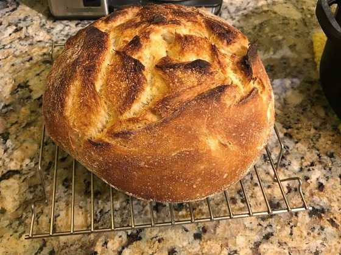
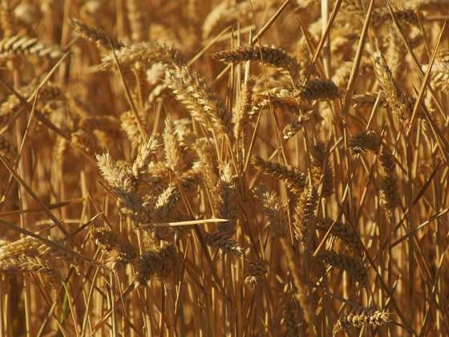

Bread 2 / ProjectManhattan / CC0 1.0
ABOUT
九日だけ、という名前
Instagramの紹介では、お店は「月に9日間だけ営業」しており、店名の「ココノカ」はそこから来ているとされています。アカウント名の「1m9d」も、「1か月に9日」を思わせます。
隠れ家のような場所にある、パンとケーキの小さなお店。このページは、その「九日」を暦のように並べた丸い印で表しました(印は制作側のイメージです)。

Weatherworn planks on top of wooden table / W.carter / CC0 1.0
MENU
パンとケーキ
パンとケーキを販売していることがInstagramで確認できました。個々の商品名・価格は確認できていないため、準備中です。下の写真はイメージです。
パン
準備中
ケーキ
準備中
営業日・時間・価格
準備中(最新はInstagramで)

Baguette en épi / Jberkel / CC0 1.0

Baguette-246424 / cocoparisienne / CC0 1.0

Loaf of sourdough bread cooling / Nutrition, Food Safety & Health / CC0 1.0

Croissant, whole / SKopp / CC BY-SA 3.0

Cardamom buns / W.carter / CC0 1.0

French Boule Bread / Lehightrails / CC0 1.0

Risen bread dough / Gageills / CC0 1.0

Wheat close-up / User:Bluemoose / CC BY-SA 3.0

Flours / Mudd1 / CC BY-SA 3.0

Wheat flour 01 / congerdesign / CC0 1.0

Ripe wheat ears / Jazzmaster1997 / CC BY 4.0

Wheat stalks / Quer / CC0 1.0

Brick-oven-thumbnail / Beboplu / CC0 1.0
VOICE
口コミ(イメージ例)
以下は制作側が作った創作で、実在のお客様の声ではありません。
営業日が限られているぶん、行けた日はうれしい気持ちになりそうです。
パンとケーキを少しずつ選んで、帰ってゆっくり食べたくなる。そんなお店だと想像します。
隠れ家のような場所なので、見つけたときの楽しみもありそうです。